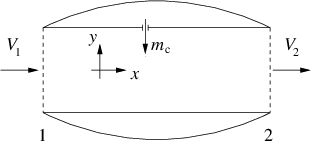

4.18.5. Exercise 4.5#
Il motore a getto in figura è alimentato con una portata \(\dot{m}_c = 1.1\ kg/s\) di carburante liquido iniettato in direzione ortogonale all’asse del motore. Calcolare la spinta \(T\) del motore ipotizzando che:
il carburante vaporizzi e diffonda completamente;
le sezioni di ingresso e uscita abbiano area uguale e pari ad \(A = 0.5\ m^2\);
sia l’aria in ingresso che i gas di scarico siano a pressione atmosferica \(P_{atm}=26400\ Pa\);
la velocità di ingresso e di uscita siano uniformi sulle rispettive sezioni;
siano note la densità dell’aria in ingresso \(\rho_1 = 0.42\, kg/m^3\), la velocità di ingresso \(V_1 = 240\ m/s\) e la velocità di efflusso \(V_2 = 980\ m/s\).
(\(T = \rho V_1 A (V_2-V_1) + V_2 \dot{m}_c \ .\))
(\(T = -38374\hat{\mathbf{x}}\ N\))

Concetti. Bilanci integrali di massa e quantità di moto.
Svolgimento. Ipotesi: Regime stazionario. Fluido non viscoso (?). Profilo costante di velocità. No gravità.
Scrittura dei bilanci integrali con le semplificazioni opportune, derivanti dalle ipotesi.
\[\begin{split}\begin{cases} \oint_{\partial V} \rho \mathbf{u} \cdot \hat{\mathbf{n}} = 0 & \text{(massa)} \\ \oint_{\partial V} \rho \mathbf{u} \mathbf{u} \cdot \hat{\mathbf{n}} = \oint_{\partial V} \mathbf{t_n} & \text{(quantità di moto)} \end{cases}\end{split}\]Ulteriore semplificazione usando l’ipotesi di profili di velocità uniformi
\[\begin{split}\begin{cases} - \rho_1 V_1 A_1 -\dot{m}_c + \rho_2 V_2 A_2 = 0 \\ - \rho_1 \vec{V_1} V_1 A_1 + \rho_2 \vec{V_2} V_2 A_2 - \dot{m}_c \vec{v}_c = \oint_{S1\cup S2\cup S3} \mathbf{t_n} \end{cases}\end{split}\]Relazione tra l’integrale della pressione e la risultante delle forze agenti sul gomito, sfruttando il fatto che l’integrale della normale su tutta la superficie è identicamente nullo. Si identificano con \(S_1\) la superficie di ingresso, \(S_2\) la superficie di uscita, \(S_3\) la superficie laterale interna del motore, \(S_{3_o}\) la superficie laterale esterna del motore. $\(\begin{aligned} \displaystyle\oint_{S_1\cup S_2\cup S_3} \mathbf{t_n} & = \displaystyle\oint_{S_1\cup S_2\cup S_3} \mathbf{t_n} + \underbrace{\displaystyle\oint_{S_1\cup S_2\cup S{3_o}} p_a \hat{\mathbf{n}}}_{=0} = \\ & = -\int_{S_1} (p-p_a) \hat{\mathbf{n}} - \int_{S_2} (p-p_a) \hat{\mathbf{n}} + \int_{S_{3_o}} p_a \hat{\mathbf{n}} + \int_{S_3} \mathbf{t_n} = \qquad(p|_{S_1} = p|_{S_2} = p_a) \\ & = \int_{S_{3_o}} p_a \hat{\mathbf{n}} + \int_{S_3} \mathbf{t_n} = \\ & = \oint_{S_{eng}} \mathbf{t_n} = - \vec{F} \end{aligned}\)$
L’equazione della quantità di moto diventa quindi:
\[- \rho_1 \vec{V_1} V_1 A_1 + \rho_2 \vec{V_2} V_2 A_2 - \dot{m}_c \vec{v}_c = - \vec{F}\]Mettendo a sistema l’equazione del bilancio di massa e la proiezione in direzione orizzontale dell’equazione della quantità di moto (si assume che l’iniezione del combustibile, e quindi \(\mathbf{v}_c\), sia perpendicolare all’asse x e quindi non compare nel bilancio della quantità di moto in direzione x):
\[\begin{split}\begin{cases} \rho_2 V_2 A = \rho_1 V_1 A + \dot{m}_c \\ -\rho_1 V_1^2 A + \rho_2 V_2^2 A = -F_x \end{cases}\end{split}\]Si ottiene
\[\begin{split}\begin{aligned} F_x & = \rho_1 V_1^2 A - \rho_2 V_2^2 A = \\ & = \rho_1 V_1^2 A - (\rho_2 V_2 A) V_2 = \\ & = \rho_1 V_1^2 A - V_2 (\rho_1 V_1 A + \dot{m}_c) = \\ & = \rho_1 V_1 A (V_1 - V_2) - V_2 \dot{m}_c \end{aligned}\end{split}\]E la spinta coincide con la componente lungo x appena calcolata:
\[T = \rho_1 V_1 A (V_2 - V_1) + V_2 \dot{m}_c\]La spinta risulta quindi: \(T = -F_x = 38374N\).
Interpretazione dei risultati e osservazioni.
In prima approssimazione, la spinta in un motore a getto è una funzione della portata d’aria e della differenza di velocità tra ingresso e uscita. Spesso in molte applicazioni il termine \(\dot{m}_c\) è trascurabile.
Ragionare in questo caso sulla validità dell’approssimazione \(\mathbf{t_n} = -p\mathbf{\hat{n}}\) nella definizione della risultante delle forze sul motore.